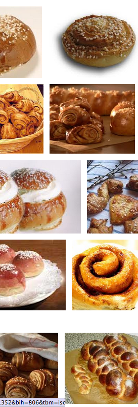

• Datajournalismin katsotaan syntyneen 1950 – 1960-luvuilla.
• Aikaisemmin on puhuttu mm. tietokoneavusteisesta journalismista ja tietokantajournalismista.
• Kyse ei ole siis uudesta ilmiöstä
Lyhyt Historia
• Aikaisimmat esimerkit keskittyvät mm. vaalidatan käsittelemiseen.
• Nykyinen aalto kumpuaa avoimesta tiedosta, paremmista työkaluista ja yleisestä media-alan murroksesta. →Lue lisää
Mutta nyt asiaan!
Esimerkkejä, esimerkkejä ja vielä kerran esimerkkejä!
Esimerkkejä
Kartoista, tiedon ryömimisestä, tiedon raapimisesta, aikajanoista, Twitteristä, Facebookista, verkostoista, videoista, kuvista, piirakoista, pylväistä.
Esimerkit kumpuavat etenkin aikaisemmalta tutkijan uraltani.
Mitä siis näimme?
Ensimmäinen video kertoi etenkin datan visualisoinnista ja toinen oli visuaalisen tarinan kerrontaa.
Karttaesimerkkejä
Toteutustekniikka:
• Google Maps ja Fusion Tables sekä JavaScript-pohjaiset räätälöinnit. Piirtotekniikka:
• Pinta-alaa ja pisteitä kuvaavat kartat sekä niiden yhdistelmät.
Svenska Yle:n ajankohtaisradio-ohjelma Radar teki keväällä ohjelmasarjaa alkoholinkäytöstä Suomessa.
Eva Koskinen otti minuun yhteyttä ja kysyi olisiko mahdollista kuvata alkoholin käyttöä kunnittain. Samoihin aikoihin THL julkisti vuosittaiset alkoholinmyyntitilastot, joita se kerää.
• Kartta perustuu HS:n kuntakoneeseen.
• Toteutettu koodilla, joka pohjautuu Raphaël-JavaScript -kirjastoon.
• Upotus uutisivuille <iframe>:lla.
• ... ja katsotaanpa vielä koodia hetki!
Alkoholikartan tiedostot
Data, esityskerros ja JavaScript-koodit. Next: Spotlight →
Case: Spotlight ja PerusS
• Facebook-raavintaa
• Verkostoanalyysiä
→ Enpäs tehnyt, no teithän!
PerusS ja Islamofobia
MOTSilminnäkijä ja Spotlight tekivät useamman ohjelman juttusarjan FDL:n toiminnasta Suomessa. Spotlight keskittyi etenkin Perussuomalaisten kytköksiin FDL:ssä.
Mitä tehtiin?!
Ensinnäkin: Marko Hietikko oli kerännyt listan kiinnostavista PS:n poliitikkojen Facebook-profiileista sekä pääasiallisista FDL-vaikuttajista.
Tietokone avuksi
Toiseksi:
Marko tuli juttelemaan minulle josko olisi mahdollista tutkia miten nämä kerätyt ihmiset ovat vaikuttaneet keskenään Facebookissa.
Lopputulos
Kolmanneksi:
Facebook-profiililistan avulla on Facebookista mahdollista kysyä ketkä ovat keskenään kavereita.
→ Hyvin tiivis verkosto ihmisistä.
Mikä hyöty?
Tuloksia voitiin käyttää apuna argumentoinneissa ja haastatteluissa.
Yksityiskohdat olivat lähinnä toimittajan työkalu, mutta analyysiä voitiin käyttää taustakuvituksena myös itse jutussa.
TV:ssä grafiikkana
Ehdottomasti monimutkaiset verkostoanalyysit ovat liian vaikeita yksityiskohtaisesti läpikäytäviksi televisiojulkaisuna, mutta niillä voitiin antaa merkitystä ja taustaa sille miten journalistinen työ oli tehty.
Ohjelma löytyy Youtubesta
Yksityiskohdat
1) Data Facebookista käsin 2) keskenäisten kaverisuhteiden kaivaminen Python-scriptillä 3) Verkoston visualisoiminen .gexf-muodossaGephi-ohjelmassa.
→ Lue lisää 1, 2
Aika katsoa kelloa
Joukkoistaminen sitouttaa
• Joukkoistaminen on ihmisten mukaan ottamista.
• Maailmalla paljon esimerkkejä.
• Aina uniikkia dataa.
• Motivaatio: helppous, hyöty, pakko
• Yksinkertaisinta tehdä esim. Google-lomake.
• Monipuolisemmat esim. Webropol-työkalulla.
• Suurin työ liittyy kerätyn tiedon käsittelyyn
Kädet rasvaan!
Katsotaan lyhyesti miltä näyttää joukkoistamisprojekti "Hjälp Calle!" kulissien takana.
Toteutuksessa mukana Google Form -työkalu ja vastausten visualisoinnit.
Lomake oli sisällytetty uutiseen, jossa kehotettiin auttamaan uutta puolustusministeriämme ja se sisälsi viisi yksinkertaista Kyllä/Ei kysymystä.
Lomake upotettiin jälleen <iframe>:lla uutisivulle:
→ Hjälp Calle
Jutun yhteyteen liitetyt piirakkadiagrammit päivittyivät reaaliaikaisesti vastauksien keräytymisen mukana.
Kysely keräsi muutamassa päivässä 600 vastausta, jonka jälkeen tuloksista kirjoitettiin vielä toinen uutinen:
• Populärt att hjälpa Calle
Jossa vastausten jakautumisen merkitystä ja tarkoitusta vielä analysoitiin/pohdittiin kysymys kerrallaan.
Kysely toteutettiin siis Google Form -työkalulla, jonka avulla on mahdollista tehdä kyselylomakkeita. Google Form kerää vastaukset Google Spreadsheet (vrt. Excel) -työkaluun, jossa vastausdataa on mahdollista jatkokäsitellä ja visualisoida:
• Linkki toteutukseen
• Lue lisää

TIMEOUT!
kahvia ja pullaa
Mitä seuraavaksi?
• Käydään läpi vielä lyhyesti muutama esimerkki kuten Twitter- analyysi ja Aikajana.
• Sitten kokeillaan tehdä alusta loppuun yksinkertainen karttavisualisointi raavitulla datalla.
#SuomiTop100
#SuomiTop100 oli Niku Hoolin ja Antti Hirvosen keksimä idea, jossa joukkoistettiin Twitter-käyttäjiä kertomaan ketkä heidän mielestään olivat 100 vaikutusvaltaisinta suomalaista Twitter-käyttäjää.
Mitä sitten...
Kiinnostuin ilmiöstä ja tutkin sitä tarkemmin.
Katsotaan ihan lyhyesti läpi minkälaisia juttuja ilmiöstä oli mm. mahdollista nähdä:
#SuomiTop100-ilmiö
Ja vielä aikajana
Aikajana on visualisointi-komponentti, joka on mahdollistaa kronologisesti toisiinsa liittyvien tapahtumien esittämisen käyttäjälle.
Vielä kolme nopeaa ajatusta, jotka haluan teidän ottavan täältä mukaanne ennen kuin kokeilemme toteuttaa esimerkin.
1) Datajournalismi on journalismin työkalu joka mahdollistaa juttujen tekemisen ja rikastaa olemassa olevia ja muutenkin tehtäviä juttuja.
2) Datajournalismin etu on kuitenkin, ettei sisältö ole kopioitavissa.
3) Datajournalismin avulla voidaan uutisesta tehdä lukijalleen persoonallinen.
Ja bonuksena vielä huomio, että datan putsaukseen menee usein jopa 80%:a projektista.
Kiitos!
Tässä olivat kaikki esimerkit, jotka halusin tuoda esille. Kyse ei ole kattavasta esimerkkien kirjoista edes niistä joita minä ole tehnyt saatikaan siitä mitä kaikkea Yle:ssä, Suomessa ja maailmalla on tehty.
Jatkuu...
Seuraavaksi
Kokeilemme ottaa Wikipediasta dataa (ryömiä), viedä datan taulukko-laskentaohjelmaan, tallentaa data Google Fusion Table -työkaluun ja visualisoida keräämämme datan eri tavoin.
• Pylväsdiagrammi, kartta, mitä keksimmekään....


Data, esityskerros ja JavaScript-koodit. Next: Spotlight →